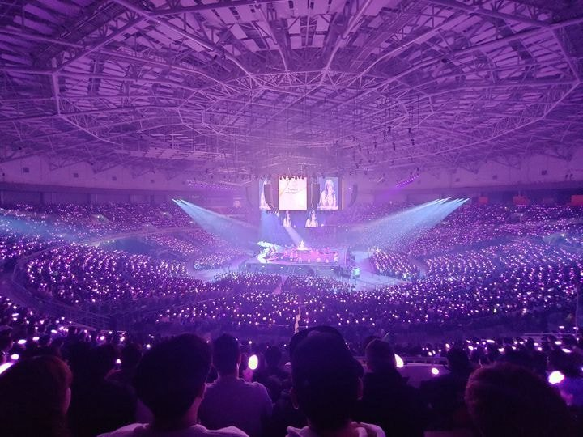

- 아이유
- 유인나
- 유애나
유애나
유애나는 초등학생부터 50대 이상의 중장년까지 넓게 분포하여, 규모도 가수의 인기만큼이나 크고 무엇보다 연령층이 매우 다양하다. 그만큼 팬들의 성향도 다양한데, 국민 여동생 시절의 아이유를 그리워하는 팬 vs 아티스트로서
성장하는 지금의 아이유를 더 좋아하는 팬, 아이유의 음악에만 관심을 가지는 팬 vs 드라마나 CF활동에도 열성적인 팬 등 팬덤 내에서도 기호가 나뉘는 경우도 많다. 물론 이렇게 단순히 이분법적으로 나뉘는 것은 아니다.
팬덤 성비는 데뷔 초에는 압도적인 남초였다가 챗셔, 팔레트 이후로 여성팬이 엄청 늘었다.
동년배의 여자 아이돌, 여가수에 비하면 아이유는 여성 팬들의 비율이 높은 편. 팔레트 이후로는 콘서트나 팬미팅에 가봐도 남자 반 여자 반이며, 계속해서 여성팬들의 수가 점점 더 많아지고 있다.
또한, 팬카페나 커뮤니티 등 온라인에서는 여성 팬 비율이 상당히 앞서는 것으로 추정된다. 실제로 아이유의 공개방송 현장에서 팬들의 인원체크를 하는 운영진은 모두 여성이다.
아이유의 애늙은이 성격이 여성들의 호감을 이끄는 원인이기도 하다.
팬 유입이 굉장히 지속적으로 일어난다는 것도 특징이다.[7] 특정 곡의 히트나 방송 출연으로 인해 집중적으로 팬 유입이 일어나는 경향이 많은 다수의 아이돌 그룹과 차이가 있다고 할 수 있다.
아이유가 제비꽃이라고 표현할 만큼 행동이나 성격이 대부분 과격하거나 극단적이지 않고 온순한 편이다. 그러다 보니 거대한 팬덤 규모에 비해 광팬의 숫자는 많지 않은 편이고 애정을 표하는 방식도 온건한 편이다.
팬덤 성격이 사생팬질과는 상극이라 팬미팅 같은 공식 행사는 물론 길거리, 공항에서 극성 팬의 민폐짓 등이 제보된 적이 전무하다. 타팬들도 유애나들의 이러한 매너를 칭찬하는 경우가 많다.
주류 걸그룹과 비교하자면 팬덤 연령층의 다양성, 대중성 면에서 우위를 보이는 반면, 코어 팬층은 주류 걸그룹보다는 약한 편이다. 그래도 팬클럽이 개설되기 시작한 2017년[9]~현재는 예전보다 코어 팬층을 많이 보유하고 있다.
팬클럽 유애나 회원 수의 매년 기하급수적 증가가 그것을 대변한다. 이전까지는 거의 아이돌 그룹 팬덤의 전유물이었던 공식 응원봉, 포스터, 시즌 그리팅 등의 판매도 점점 활발해지고 있다.
아무래도 아이유가 독한 안티들, 악성 루머 유포자들도 끊이지 않는 가수다 보니 안정적인 팬덤 유지를 위해선 어느 정도 진성 팬이 필요한 것도 현실이며, 팬덤에서도 아이유가 겪은 두 번의 굵직한 시련 속에서
악성 루머 등에 대응하려다 보니 마냥 온순하기만 할 수는 없는 것이 이러한 변화를 이끈 이유라 할 수 있겠다.
2018년 10주년 투어 콘서트에서 아이유 본인이 지속적으로 온순함 그 자체였던 팬들의 성격이 조금씩 바뀌고 있는 게 느껴진다는 식의 이야기를 하는 것으로 보아 본인도 그에 따른 변화를 조금은 느끼고 있는 것 같다.
2017년 중에 20만명을, 2019년 1월에 공식 팬카페(전 'U愛나') 23만명[12]을 돌파했다.[13] 공식 카페인 23만명을 기준으로 해도 한국 솔로 여가수 중에서 독보적인 팬 수,
아니 걸그룹까지 포함해봐도 자타공인 걸그룹 팬덤 깡패 소녀시대 다음 가는 거대 팬덤이다. 걸그룹에서 2번째로 많은 Apink보다도 많다. 사실상 90 년대 출신 솔로 여가수들 중 최강 팬덤이라 할 수 있다.
최근에는 팬카페보다는 음반 판매량으로 팬덤 규모를 측정하는 보통인데, 음반 판매량으로 봐도 여성 솔로에서는 태연과 함께 투톱을 달리고 있고, 전성기 걸그룹에도 뒤지지 않는 수준의 판매량을 보인다.
특히 2019년 Love poem은 초동(발매 후 최초 1주) 판매량이 147,000장을 넘기며 여성 솔로 1위 및 전체 여가수의 앨범 중 3위[14]의 초동 기록을 세우며, 데뷔 11년이 넘어가는 판에 시들해지기는 커녕 팬덤파워를
크게 확장시켰음을 보였다. 사실 그 전까지 아이유의 경우 총판에 비해 초동 판매는 높은 편은 아니었는데, 이는 다른 아이돌들과 경쟁한다거나
기록에 연연하지 않는 분위기가 강해서 앨범이 나오면 바로 구입하기 보다는 '자기가 사고싶을 때' 사는 편이기 때문이었다. 아이유가 딱히 팬싸인회를 많이 하는 가수도 아니라서 판매량이 초반에 몰릴 일도 없었다.
전작인 팔레트도 초동은 2만장대인데 총판은 9.5만장으로 첫주판매량의 5배를 팔았고, 이것도 상당한 판매량이다.

적재는 '별 보러 가자'에 이어 1집 수록곡 'The door(더 도어)'까지 달콤한 목소리와 기타 연주로 시청자들의 마음을 녹였다. MC 김이나는 "적재의 목소리는 트렌디한 동시에 포크 음악 같은 정서도 있다"며 "여심을 들었다 놨다 한다"고 감탄했다.
한편 비비는 고등학생 때 장거리 연애했던 경험담을 공개했다. "중국에 사는 친구와 연애하며 화상 통화도 하고 가끔 만났었다"며 "그 관계에서 영감을 얻어 곡 'Fedexx girl(페덱스 걸)'을 작사했다. 배송업체 이름에서 노래 제목을 따왔고, 나를 배달해서 선물로 주겠다는 내용"이라고 밝혔다. 비비는 말할 때의 수줍은 모습과 달리 무대에서는 당당하고 치명적인 퍼포먼스로 반전 매력을 뽐내 강렬한 인상을 남겼다.
뿐만 아니라 평소 애창곡으로 황치훈 '추억 속의 그대', 강산에 '라구요', 높은음자리 '바다에 누워' 등 1998년생인 비비가 태어나기도 전에 유행했던 곡들을 꼽아 놀라움을 자아냈다. MC 배순탁은 "요즘 친구들은 신곡, 구곡 구별이 없는 것 같다"며 "예전에는 계보를 보며 음악을 들었는데, 요새는 계보가 무력화된 시대라 처음 듣는 노래가 신곡이나 마찬가지"라고 덧붙였다.
적재, 비비와 함께한 음악당 9회는 유튜브 MYSTIC TV와 CAKE POP 채널 및 음악서비스 플로(FLO)에서 다시 시청할 수 있다.